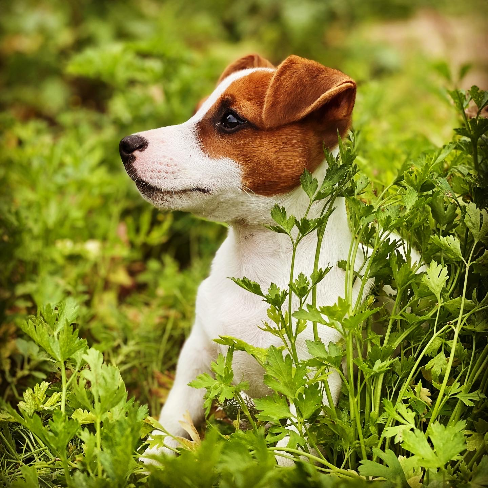

Джек-рассел-терьер – узнаваемая и популярная порода собак
Проверка стиля 1 через тег Р
1 first commit
Дальше мы проверяем стиль для все Р по странице
Это друг, с которым вам не придется скучать ни минуты.
Приветствую, я Лола!

эта строчка со своим id коммит 2
эта строчка со своим классом